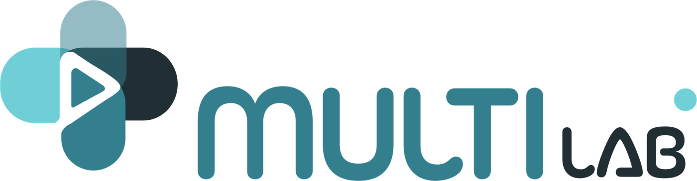

Apunta la cámara a una tarjeta de Multi LAB y el producto aparece encima.
Modelos hechos con las fotos del empaque de CORAESSENS y PANCREOGEN (Nutrabiotics) y de TEARSOFT, DEFEROL y VITYBELL (Procaps), mostrados con permiso del laboratorio. La primera vez descarga unos 3 MB y necesita internet.
Realidad aumentada